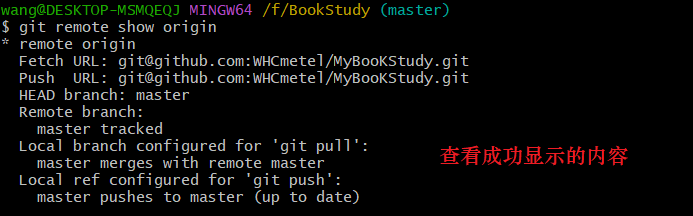
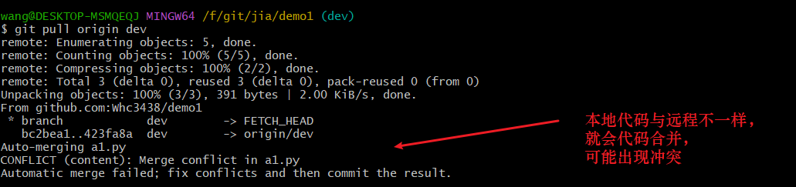
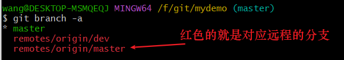
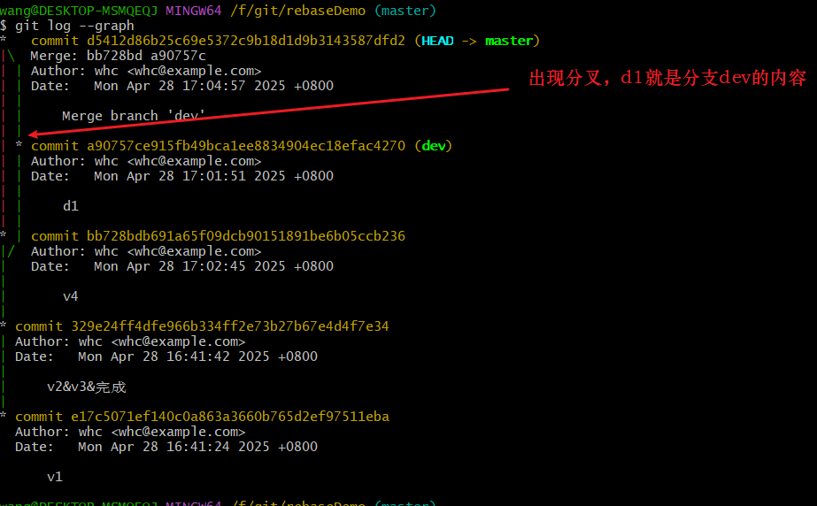
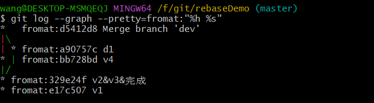
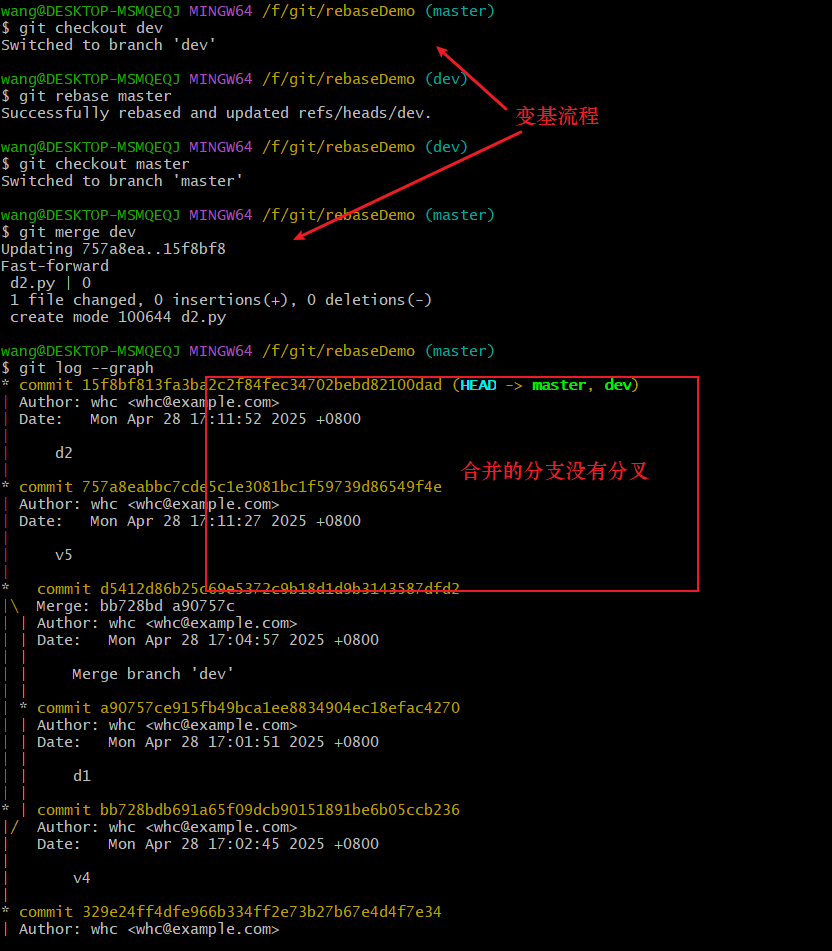
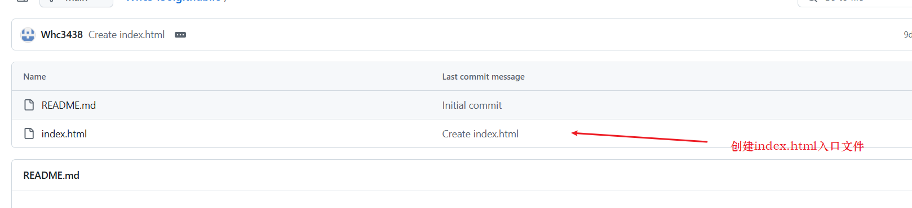

Git基础入门
一、Git是什么？
git是一款分布式版本控制的软件。git作用跟svn一样，都是用于版本控制，俩者不同之处在于svn是集中式的，git是分布式的。
所谓版本控制，专业说法是一种记录一个或若干文件内容变化，以便将来查阅特定版本修订情况的系统。 例如，编写文档或者系统，会有初稿，中稿，完整稿，最终稿等不同的版本，保存所有版本内容就是版本控制。
版本控制系统也是经历了许多版本，其历史如下：
本地版本控制系统，本质就是复制整个项目目录，取不同名字来表示对应版本。唯一的好处就是简单，但是特别容易犯错。 有时候会混淆所在的工作目录，一不小心会写错文件或者覆盖意想外的文件。为了防止该问题，之后有人开发了许多种本地版本控制系统，大多都是采用某种简单的数据库来记录文件的历次更新差异，其中最流行就是 RCS。
RCS 的工作原理是在硬盘上保存补丁集（补丁是指文件修订前后的变化），通过应用所有的补丁，可以重新计算出各个版本的文件内容。

集中式版本控制系统（Centralized Version Control Systems，简称 CVCS）。 这类系统都有一个单一的集中管理的服务器*，保存所有文件的修订版本，而协同工作的人们都通过客户端连到这台服务器，取出最新的文件或者提交更新。其最出名的软件就是Subversion 简称svn。该系统最大的问题就是断网，与服务中心断开连接就无法更新版本。或者服务中心数据丢失就将丢失所有历史版本。

分布式版本控制系统（Distributed Version Control System，简称 DVCS）。 客户端并不只提取最新版本的文件快照， 而是把代码仓库完整地镜像下来，包括完整的历史记录。 这么一来，任何一处协同工作用的服务器发生故障，事后都可以用任何一个镜像出来的本地仓库恢复。 因为每一次的克隆操作，实际上都是一次对代码仓库的完整备份。这类系统中，最著名的就是 Git。

总结: git就是每个客户端都有全部版本的控制软件，通过与服务器或者其他客户端同步保证所有端都有所有版本记录
二、Git安装步骤
windows端安装在官方下载网页https://git-scm.com/downloads/win，下载最新客户端安装包，下载完进行安装不停下一步就可完成。
Linux端 安裝你可以使用 yum：
$ sudo yum install git-all如果你是使用 Debian 系列的發行版，如 Ubuntu，你可以使用 apt-get：
xxxxxxxxxx$ sudo apt-get install git-allMac 端安裝在 Mac 中安裝 Git 有很多種方法。 一是下载安装包安装，下载网址https://github.com/apps/desktop
二是使用指令
xxxxxxxxxx$ sudo port install gitgit安装完成后，windows端鼠标右键就可打开git bash客户端，输入指令git version就是查看git版本，查看成功就表示安装成功。
git的开发者是Linux创始人之一，因此git bash端口中可以直接使用linux相关指令。
ls：查看当前目录下的文件与文件夹ls -al:查看当前目录中全部的文件信息,包括隐藏文件pwd：查看路径cd:进入下一目录；cd ..：进入上一目录；cd -表示重回上一次目录，-表示返回上一步touch:创建文件mkdir:创建文件夹vim或vi:编辑文件内容echo 文字内容 > 文件名:表示替换文件中全部内容为文字内容clear:清空页面rm:删除文件，rm -f表示强制删除文件，rm -rf表示强制循环删除文件夹中的全部内容，慎用。exit:退出命令行快捷键:1.当文件名很长时,输入部分内容，然后按
tab键自动补全其余内容2.当命令输错时，使用
Ctrl+C直接取消命令重新编写
三、Git基础
3.1 Git原理与三大区域
理解管理文件的三大区域前，先了解Git文件存储原理，与svn对比理解：
svn管理的是文件变化内容，就是记录增量，只对文件发生变化的内容进行保存，也就是每个文件都有一个版本
git管理的是全部文件快照，是用指针指向包含全部文件的一个版本，当出现变化的内容，就会保存变化的文件与未修改的文件为一个版本，指针指向新的版本。
Git保存文件的三大区域：
工作区，该区域又分为两个部分，一部分是透明色已管理(commit)的文件，另一部分就是红色新文件或已修改的文件。
修改了已管理文件的内容，它会自动变为红色文件，该过程是git自动检测执行的。
暂存区，该区域是绿色暂存区文件，是使用add指令添加了新文件或已修改的文件。
版本库，该区域是透明色版本库文件或已管理文件，是使用commit指令提交暂存区文件，生成版本的文件。

回滚指令:
版本回滚
xxxxxxxxxxgit reset --hard 版本号版本库回滚到暂存区
xxxxxxxxxxgit reset --soft 版本号暂存区回滚到工作区未管理文件
xxxxxxxxxxgit reset HEAD 文件名 //常用git rm --cached 文件名 //跟上边指令区别是，它是删除缓存区文件，因此恢复的文件状态时新文件，上边的是修改文件，不常用未管理文件回滚到已管理文件，不常用，因为未管理的文件回退后不可恢复。
xxxxxxxxxxgit checkout -- 文件名版本库回滚到工作区未管理文件
xxxxxxxxxxgit reset --mix 版本号mix就相当于soft+HEAD指令的效果，hard就相当于soft+HEAD+checkout的效果。最常用的依然是hard指令。
3.2 Git基本指令
3.2.1 git简单控制流程
git做版本控制本质上就是让git管理一个文件夹。其初始化步骤为：
先创建要管理的文件夹与文件，
进入管理的文件夹根目录中打开git bush，
使用指令初始化（又称提名）git，该过程会生成.git隐藏文件夹，该目录中就是git的核心文件
xxxxxxxxxxgit init
使用git相关指令管理文件，并生成对应版本,其简单流程如下：
xxxxxxxxxx1. git status //查看文件状态2. git add 文件名 //表示添加单个文件或者git add . //表示将全部未添加的文件都添加3. git commit -m '版本名称' //版本生成，也可不加后面的-m,这样就要单独写信息commit提交的id是一个摘要值，这个摘要值实际上是使用sha1计算出来的
xxxxxxxxxxgit commit -am '信息' //是add与commit的简写，但这个只针对修改文件有效，新文件无效。commit的id作用就是下一个版本有id值可以指向该版本，一个版本就是一个快照其中parent值就是上一个版本的id。
3.2.2 git config
第一次commit生成版本可能会出现错误，因为没有配置用户名与邮箱的信息，使用下面的指令进行配置用户名与邮箱
xxxxxxxxxxgit config --global user.email "you@example.com" //配置邮箱git config --global user.name "Your Name" //配置用户名 该配置内容是写入C盘中的.gitconfig配置文件中的，后续该文件还可以配置其他内容

git config指令是操作git配置文件的命令。git的有三大配置文件：
--local,表示本地配置文件，修改.git文件夹中的config文件
--global,表示全局配置文件，修改C:\Users\wang目录下的.gitconfig文件
--system,表示系统配置文件，/etc/.gitconfig,需要root权限才能查看
最常用是--local，它的优先级最高，会覆盖下面两个配置文件，但它只作用于当前项目，其他项目无效。编写git config指令时如果不指定配置文件,也就是不写--global内容，默认就会是--local。
git config相关指令：
查看所有关于git config指令
xxxxxxxxxxgit config --help //跳转到git config页面配置文件查询
xxxxxxxxxxgit config --list //查看配置文件列表git config user.name //单独查看配置文件 user.name的信息修改配置文件信息
xxxxxxxxxxgit config --local user.name '新名字' //这里是修改本地文件中的user.name删除配置文件信息
xxxxxxxxxxgit config --local --unset user.name直接修改配置文件,不推荐新手用
xxxxxxxxxxgit config -e //-e是edit的简写，这里没指定配置文件，默认就是--local文件
3.2.3 git查询指令
查看文件状态
xxxxxxxxxxgit statusgit status -s \\简略文件状态信息文件状态红色表示文件未添加，绿色表示文件未添加，没有文件表示文件已经提交

简略信息中，新文件是问号，添加文件是A,修改后的文件是M。
xxxxxxxxxxgit status -s 文件名 //单独查看某个文件的状态查看版本日志
xxxxxxxxxxgit log //查看所有提交日志
查看日志还可配合参数展示不同的日志
xxxxxxxxxxgit log -数字 //查看最近几条日志git log --oneline 文件名 //单行信息内容 简略化展示git log --graph // 图像化log内容//pretty表示指定格式展示内容git log --pretty=oneline //单行显示内容git log --graph --pretty=fromat:"%h - %an,%ar : %s" //图像化log内容并简略信息git log --graph --abbrev-commit //简写信息查看单个文件日志
xxxxxxxxxxgit log 文件名查看提交信息
xxxxxxxxxxgit show //默认查看最新的版本提交内容git show 版本号 //查看对应版本提交的内容
查看帮助,可查询git的全部指令
xxxxxxxxxxgit --help
3.2.4 git文件操作（*）
添加文件(文件工作区放入暂存区)
xxxxxxxxxxgit add 文件名1 文件名2 ... //同时添加多个文件撤销（回滚）添加的文件(暂存区放回工作区)
xxxxxxxxxxgit reset HEAD 文件名当一个文件add后，该文件就进入git的暂存区，如果这时直接删除文件，再创建同名文件，则会出现两种情况：
新建的文件与删除文件内容相同，则文件直接就是add后的文件；
新建的文件与删除文件内容不同，则会出现文件有两个状态，即使add的文件又是修改的文件，如下图：

使用add就会将两个信息合并，但这种操作始终是两步比较麻烦，这时可使用一个命令代替
git rm -f强制删除就不会保留记录。
删除文件(与git add恰恰相反)
xxxxxxxxxxgit rm 文件名git rm删除文件不仅删除文件，并且会删除该文件放入暂存区,并且该文件会进入一个d状态。不使用git rm删除的文件，而是使用rm直接删除的文件，文件会在工作区，并且该文件进入一个红色d状态。
git rm指令相当于普通的rm加上git add指令

撤销（回滚）删除文件(文件状态是已提交)
xxxxxxxxxxgit reset HEAD 文件名 //删除文件放入工作区git checkout -- 文件名 //撤销删除如果是使用rm直接删除文件，撤销就只需要一步
git checkout -- 文件名。移动文件或重命名文件
如果直接移动，则该文件git信息会被保留，之后再创建同名文件会出现删除同样的问题。重命名也是一样，修改了文件名称，后续再出现同名内容，也会出现一样的问题。因此要使用git指令移动或重命名
xxxxxxxxxxgit mv aaa.txt ddd/ //将aaa文件移动到ddd文件夹中git mv bbb.txt eee.txt //将bbb文件修改为eee文件git mv会让文件进入一个重命名的状态

git mv其实都相当于普通的mv加上git add指令
撤销重命名文件(git mv的文件)
xxxxxxxxxxgit reset HEAD 原文件名 新文件名 //如果是mv重命名的文件，不需要该指令直接使用下面两个命令即可git checkout -- 原文件名rm 新文件名恢复或撤销文件更改的命令。这个命令可以帮助开发者在多种情况下管理文件的状态，例如还原文件到最新提交的状态、丢弃未暂存的更改、丢弃已暂存但未提交的更改等。最常用的就是还原文件的修改内容。
xxxxxxxxxxgit restore 文件名 //还原文件修改内容对比文件修改内容，可结合git restore恢复文件内容。
xxxxxxxxxxgit diff 文件名
查看文件日志内容
xxxxxxxxxxgit log 文件名查询文件提交修改记录，该命令会列举出该文件现有内容的来自哪个版本，提交人名是什么，方便我们查询提交记录
xxxxxxxxxxgit blame 文件名
3.2.5 git版本回滚
回滚，当开发了很多版本，要回到以前的版本的文件内容，就需要使用回滚
xxxxxxxxxxgit reset --hard HEAD^ //回退上一个版本 ^表示上一个 ^^就表示上两个git reset --hard HEAD~1 //回退1个版本，数字为2就表示两个版本git reset --hard 版本号(可通过git log查询出来，不一定全部版本号，只要部分即可)版本2中index文件的内容

回滚到版本1中index文件的内容

回滚之后，
git log指令只能查到v1的版本不能再查到v2的版本，如果需要回滚到回滚前的版本，就需要查询指令查看回滚前的版本信息
xxxxxxxxxxgit reflog除了版本库回滚外，也有单步回滚，讲解git三大区域时会详细说明。
3.2.6 git tag
commit提交的版本，会发现版本号是不规则的数字，这样是不方便管理的，可使用Tag给版本添加标签。本质tag就是版本的别名。tag不受分支影响，它的创建是全局的。
s给当前版本添加标签tag
xxxxxxxxxxgit tag 标签名 //给当前版本取别名给特定的版本添加标签tag
xxxxxxxxxxgit tag 版本名 版本号给特定版本添加tag与附注信息
xxxxxxxxxxgit tag -a 标签名 版本号 -m '附注信息'-a 理解为annotated表示附注标签，它和-m配合使用-m 指附注信息，一般填写创建版本人名称、时间以及版本更新内容查看已有的标签tag
xxxxxxxxxxgit tag有了tag后，可直接git show使用tag版本名。

筛选标签tag
xxxxxxxxxxgit tag -l 对应的标签名，可使用星号-l 是--list的简写，表示列表删除标签tag
xxxxxxxxxxgit tag -d 标签名-d 是--delete的简写，表示删除远程推送
xxxxxxxxxxgit push origin 标签名 //表示推送tag标签的版本git push origin --tags //表示将远程仓库没有的tag都推送上去远程仓库有了tag就可直接下载对应版本，也可利用tag创建release版本用于下载。
3.2.7 git diff
diff在linux系统中也用于比较两个文件的信息。了解linux本身的diff才容易理解git diff。
直接比较两个文件内容(不常用，展示信息不明确)
xxxxxxxxxxdiff 文件名1 文件名2比较两个文件内容，展示详细信息
xxxxxxxxxxdiff -u 文件名1 文件名2
git diff有三种对比：
暂存区比较工作区(要两个区域都有同名文件时才会生效)
xxxxxxxxxxgit diff //相当于diff -u 暂存区文件 工作区文件版本库比较工作区
xxxxxxxxxxgit diff HEAD（版本号） //相当于diff -u 版本库文件 工作区版本区比较暂存区
xxxxxxxxxxgit diff --cached进阶理解,上一个相当于下面的简写
xxxxxxxxxxgit diff HEAD^ --cached
总结：工作区的内容是最新的，因此始终是被暂存区或版本库内容对比。
暂存区与版本库相比，暂存区是最新的内容，因此始终是版本库比较暂存区。
版本库可以使用版本号选择任意版本，也可使用head寻找。
3.2.7 日志信息修改
git commit是必须要有日志信息的，如果日志写错，git中是可以修改的。
xxxxxxxxxx git commit --amend -m '新的信息' 这是只修改上一次提交的版本日志，如果该日志已经push到远程仓库，就不要再修改日志信息。
3.2.8 换行符警告
当你在Git中看到 “warning: LF will be replaced by CRLF the next time Git touches it” 的警告时，这意味着你的文件使用了LF（换行符），而Git将在下次处理该文件时将其转换为CRLF（回车换行符），这是因为Windows系统使用CRLF作为换行符。 要解决这个问题，你可以采取以下几种方法：
忽略警告：如果这个警告不会影响你的工作，可以选择忽略它;
禁用自动转换：可以通过设置
git config --local core.autocrlf false来禁用Git自动将LF转换为CRLF的功能;使用.gitattributes文件：在项目根目录下创建一个
.gitattributes文件，明确指定文件的换行符处理方式。
3.3 分支
分支是git中非常重要的功能，它可以更好的进行版本隔离，特别是做开发代码，一般都会有两个分支，分别是master线上分支与dev开发分支。master是git默认的主分支，不用创建就有。
分支也可以实现协同开发，让多个人各创建自己的分支，然后各自开发自己的功能，开发完成后合并起来。
分支解决一个特殊情景的问题，线上紧急bug修复：
master分支就相当于线上代码，当开发完的v2版本后，v3版本需要一个月完成，当开发v3到一半时线上出现bug，这时回滚就是失去v3的内容，不回滚不能解决线上问题。
解决方式：开发v3版本时，先创建dev分支，再dev分支上开发，当线上出现bug，切换分支修改bug，再切换分支开发dev，最终开发完成合并分支就可完成。
3.3.1 分支指令
git分支指令：
查看分支
xxxxxxxxxxgit branch创建分支
xxxxxxxxxxgit branch 分支名切换分支
xxxxxxxxxxgit checkout 分支名创建并切换分支
xxxxxxxxxxgit checkout -b 分支名删除分支，注意master分支不能删除，当前所在的分支不可删除或者当前分支有新的内容，没有merge不可删除
xxxxxxxxxxgit branch -d 分支名git branch -D 分支名 //大D表示强制删除，不merge也可删除合并分支，该过程可能会出现冲突，冲突的出现是两个分支同时修改了同一个文件内容时产生的，这时就需要解决冲突，再提交完成合并。
xxxxxxxxxxgit checkout 被合并分支名 //合并前，先切换到被合并的分支git merge 要合并分支名 //然后再合并分支修改当前分支名main
xxxxxxxxxxgit branch -M main全局修改master分支名称为main
xxxxxxxxxxgit config --global init.defaultBranch main
3.3.2 分支原理
版本控制系统管理文件原理默认有两种方式：
每个版本都全部文件复制一遍，svn就是采用该方式，缺点是对应大型项目，复制全部内容会特别费时。
创建指针，新版本就是创建一个指针指向旧版本，git就是采用该方式，因此git创建分支，十分快速。创建指针然后让HEAD指向新指针。

HEAD是一个指针，它指向的是当前的分支。master是默认的分支。
创建分支——>切换分支——>合并分支的简单流程如下：

根据上图可看到分支的切换本质就是HEAD指针的切换，具体体现就是在.git文件夹中就是修改HEAD文件内容

HEAD指向分支的版本管理文件就在refs——heads文件夹中，文件内容就是当前分支版本id
-d不能删除分支也就是dev与master内容不同，dev分支在新的版本上需要合并到master上才可删除。

合并使用fast-forward模式本质就是master分支向前移动一位,没有冲突。这种模式是默认的，但不会保存分支信息。
不使用fast-forward模式，保留分支信息
xxxxxxxxxxgit merge --no-ff 分支名3.3.3 冲突
合并不一定每次都成功，有时会出现冲突。
产生冲突的方式可以让master分支修改一个文件内容，再在dev上同时修改同一个文件内容，两者都提交一个版本。这时就会出现冲突。
为什么会出现冲突?
因为master向前了版本，dev也向前了版本，这时合并就不能向之前fast-forward只切换指针，还需要匹配两者内容，如果有相同部分被修改，就需要用户自己先确认留下的内容后，再合并。
解决冲突，HEAD是当前分支版本内容，下面的是dev分支内容

解决冲突的流程
修改冲突文件，也就是删除多余的内容保留需要的内容
使用
add添加修改后的冲突文件，这时add的效果是解决冲突再
commit提交文件生成版本，这时就解决完冲突为了保证分支的内容与master一致，还可在dev分支上再合并master的内容。
注意这时分支合并会直接成功，因为master分支解决完冲突后，不仅拥有dev分支的内容，并且还向前提交了一个版本，这时的合并就是fast-forward向前合并，因此会直接成功。
3.4 checkout与stash
在之前我们已经使用git checkout的两种用法,切换分支与回退修改内容。
除了这两个用法外，它还可以直接切换版本，让HEAD进入游离状态。
xxxxxxxxxxgit checkout 版本号这里其实是在切换的版本上开辟了一个新的分支，分支名称为特殊的字符
xxxxxxxxxxgit switch -c 分支名 //可使用该指令给游离状态的分支命名git switch - //表示回退游离状态，也就是删除游离分支并回到之前的分支git checkout就可以实现在任意版本处开分支，而不是之前只能在最新的版本处开分支。
在游离状态可以直接创建文件，然后add添加并commit提交，但没命名分支前不要随意切换，如果切换就会丢失在该状态下创建的内容。
错误切换后，可输入指令挽回修改的内容
xxxxxxxxxxgit branch 分支名 游离的版本名
不命名分支，也可使用stash创建临时现场保存内容。
stash使用场景是有多个分支，在其中一个分支上开发了内容需要临时切换到其他分支时，但又不能提交文件版本防止错误，就可使用stash临时保存内容。比如master分支与dev分支同时修改同一个文件内容，当master提交了一个版本，切换到dev修改了文件没提交要切换master就会报错。

创建临时保存版本
xxxxxxxxxxgit stashgit stash save '临时版本名称' //给临时版本取名查询临时版本
xxxxxxxxxxgit stash list
取出最新临时版本内容并删除临时版(常用)
xxxxxxxxxxgit stash pop取出临时版(不会删除临时版本)
xxxxxxxxxxgit stash apply //取出最新临时版本git stash apply stash@{版本序号} //取出对应版本序号的版本删除临时版本
xxxxxxxxxxgit stash drop stash@{版本序号}如果临时版本同时修改同一个文件多次，恢复一个版本并commit提交，再恢复另一个版本时也可能出现冲突。这时就按之前解决冲突的方式解决问题即可。
3.5 .gitignore忽略文件
git是帮我们完全管理一个文件夹中所有的内容，但当遇到我们不想要git管理某些文件时，就可以创建一个.gitignore文件完成。
xxxxxxxxxxtouch .gitignore案例，下面的文件都不需要管理，当然也包括.gitignore文件本身，除了2.py使用特殊方式管理。
在.gitignore文件编写内容如下,注释内容不写
xxxxxxxxxx1.py //表示忽略所有名为文件1.py，包括循环目录的内容*.py //表示忽略后缀名为.py的文件!2.py //!表示相反，不忽略文件2.py/filedd //表示忽略文件夹filedd也可写为 filedd/.gitignore //表示忽略文件.gitignore/fileddd/ccc.txt //表示忽略文件夹fileddd中ccc.txt文件，当文件夹中没有其他文件，该文件夹也会被忽略/*/ccc.txt //表示忽略根目录下一级子目录下的所有ccc.txt文件/*/**/ccc.txt //表示忽略除根目录下所有子目录中的ccc.txt文件 **就表示所有子目录#表示注释内容忽略效果
自己写ignore文件很麻烦，可以直接在github上直接下载不同开发语言的gitignore。直接搜索gitignore就可找到一个项目，其中就有每种语言的gitignore文件。

3.6 git可视化操作工具
对应开发人员使用命令操作git是很简单的，但如果不懂代码的人员也要使用git，就可以使用工具帮助完成git的指令操作。
git自带可视化工具Git GUI,但其操作比较复杂，不常用。最好用的还是小乌龟TortoiseGit。
进入官网直接下载工具安装https://tortoisegit.org/，记得下载好软件后下载汉化包，这样就可以变为中文。

该工具使用非常方便，安装好后点击鼠标右键就可进行git操作。

安装完软件后安装语言包，之后就可在设置中修改语言为中文
它的核心本质其实就是将git所有的指令变成点击按钮，点击添加就是add指令。其中它最强的功能就是使用icon显示文件状态。但因为windows系统限制的图标数量，需要修改注册表才能完整使用该功能。
xxxxxxxxxxwin+r regedit.exe //打开注册表HKEY_LOCAL_MACHINE\Software\Microsoft\windows\CurrentVersion\Explorer //打开该路径新建或修改键名 Max Caheed Icons(最大缓存图标)值为2000 该数据为字符串类型修改完成后，还不行就重命名下面的文件，最关键是要让这几个文件在最上边，多加几个空格即可。
重启电脑后，就可以看到文件都会有标识状态的图标，这样可以了解文件状态。

3.7 Oh-My-Zsh(美化命令行)(了解)
在Windows上使用Oh My Zsh可以让你的终端更加美观和功能强大。以下是详细的步骤：
安装 Git Bash：下载并安装 Windows 版本的 Git。在安装过程中，勾选 "Add a Git Bash Profile to Windows Terminal"
勾选是为了在
Windows Terminal（终端）中能够使用Git Bash，可以看一下，原本终端是没有Bit Bash选项的,选择后才有
安装Zsh：下载Zsh安装包，下载地址：https://packages.msys2.org/packages/zsh?repo=msys&variant=x86_64
也可使用下载指令（不一定有效），curl是一个利用URL语法在命令行下工作的文件传输工具，
xxxxxxxxxxcurl -LO https://mirror.msys2.org/msys/x86_64/zsh-5.9-3-x86_64.pkg.tar.zst解压到Git的安装根目录下。打开Git Bash输入
zsh，确认安装成功。下载的包为pkg.tar.zst后缀，需要解压两次才行第一次解压，解压到当前目录即可，得到
.tar文件第二次解压
.tar文件到当前目录（直接解压到 git 安装目录可能会没有权限），移动解压后的文件到git安装目录即可，需要权限的话就授权，重名的话直接覆盖：
xxxxxxxxxxtar -xvf zsh-5.9-2-x86_64.pkg.tar.zst -C /path/to/git/root //需确认路径是git根路径输入
zsh就表示启动zsh，这时光标会与git bash时不同。编辑Git Bash的配置文件
.bashrc，使其默认启动Zsh。vim ~/.bashrc
xxxxxxxxxx# 在文件末尾添加以下内容if [ -t 1 ]; thenexec zshfi成功后以后打开git bash就会默认启动zsh。tab是最好用的快捷键。
安装Oh My Zsh，在安装好
Zsh终端之后，看起来跟Bash终端并无太大的区别，我们也没有进行设置。而Oh My Zsh可以用于管理Zsh配置。它捆绑了数千个有用的功能、助手、插件、主题等。在命令行输入命令并按回车执行：xxxxxxxxxxsh -c "$(curl -fsSL https://raw.githubusercontent.com/ohmyzsh/ohmyzsh/master/tools/install.sh)"
配置zsh
Zsh的配置文件在用户的家目录，文件是.zshrc，编辑配置文件，可以对Zsh进行一些定制化配置：xxxxxxxxxxvim ~/.zshrc//编辑保存后不会立即生效，需要source指令source ~/.zshrcOh My Zsh安装之后，默认使用主题是robbyrussell，可以修改为ZSH_THEME="agnoster"，.zshrc配置中的ZSH_THEME字段，所有可用主题可参考ohmyzsh官方文档，这里先配置一下我个人比较喜欢的主题：配置插件。通过使用插件，可以让
Zsh的功能更加强大，Zsh和Oh My Zsh自带了一些实用的插件，也可以下载其他的插件。 如Zsh自带Git插件，可以在命令行显示Git相关的信息，并提供了一些操作Git的别名：xxxxxxxxxxgaa = git add --allgcmsg = git commit -mga = git addgst = git statusgp = git pushzsh-autosuggestions插件，可以在你历史指令中找到与你当前输入指令匹配的记录，并高亮显示，如果想直接使用，可以直接通过右方向键补全。 安装插件，在终端分别执行下面两条命令xxxxxxxxxxcd ~/.oh-my-zsh/custom/plugins //进入插件目录git clone https://github.com/zsh-users/zsh-autosuggestions ${ZSH_CUSTOM:-~/.oh-my-zsh/custom}/plugins/zsh-autosuggestions插件下载完成之后，编辑
~/.zshrc配置文件，修改插件相关配置项：vim ~/.zshrc
如果你不喜欢提示默认的浅灰色，可以在
~/.zshrc中修改（没有配置项就添加）xxxxxxxxxxZSH_AUTOSUGGEST_HIGHLIGHT_STYLE="fg=#9fc5e8"目录跳转插件：
Zsh自带有一个插件z，可以让我们在访问过的目录中快速跳转，将该插件配置到~/.zshrc文件中即可使用：
保存退出之后，重载配置，随意进入一些目录，之后再使用命令
z就可以实现快速跳转，支持模糊匹配：配置别名:
Zsh的alias配置项可以自定义命令别名，在使用一些比较复杂的命令时，使用别名可以提高效率，这里举例添加一个Git日志的别名：(注意等号两边不要有空格)xxxxxxxxxxalias gli="git log --color --graph --pretty=format:'%Cred%h%Creset -%C(yellow)%d%Creset %s %Cgreen(%cr) %C(bold blue)<%an>%Creset' --abbrev-commit"高亮插件,步骤跟自动插件一样
xxxxxxxxxxcd ~/.oh-my-zsh/custom/plugins/git clone https://github.com/zsh-users/zsh-syntax-highlighting.git下载好后在配置文件中配置
xxxxxxxxxxplugins=(git zsh-syntax-highlighting zsh-autosuggestions)zsh不仅能美化界面，还有很多git提示，比如文件目录+当前分支以及是否有文件未管理，这样可大大提高使用git的效率，

未使用主题时，依然有当前分支，有黄色❌就表示有文件未管理。
zsh使用后，
ls -al的指令可直接使用l代替。
四、Github
github相当于git的一个远程仓库，它跟git没有任何直接的关系，它相当于互联网上的云盘，要实现两地开发，就可以在github建立个人仓库进行完成。

要使用GitHub先要注册创建个人账户。先进入github官网https://github.com/。
个人账户注册完毕后,就可以创建一个自己的仓库。
4.1 仓库 repository
4.1.1 搭建远程仓库
创建仓库步骤很简单。流程如下图：
三个选项不勾选表示：1.不创建README文件说明文件，2.不创建.gitignore忽略文件，3.不创建license许可证文件，如果创建他人有许可证就可以完全使用你的项目，相当于项目开源化。
创建完成后就可以获得一个远程仓库地址https://github.com/Kitaily/demo1.git
4.1.2 push与origin
创建完成远程仓库后就利用远程仓库地址push本地代码。
远程仓库地址取别名
xxxxxxxxxx//添加别名 origin就是远程仓库地址git remote add origin https://github.com/Kitaily/demo1.git本地代码推送到远程仓库
xxxxxxxxxx//推送本地代码到远程仓库 -u表示默认，可以不写 推送的是master分支git push -u origin master//-u的属性可以省略，其含义undefined默认的，就是设置git push默认为提交到origin的master分支，写一次后，后续写git push就跟上边效果一样
如果推送出现问题，输入账户密码可能失败。可以采用三种免密登录方式解决问题：
修改远程仓库url地址，将账户与密码直接添加在地址上，使用修改指令修改origin
xxxxxxxxxxgit remote set-url origin https://用户名:密码@github.com/Kitaily/demo1.gitSSH实现，其流程比较复杂(推荐使用)
先使用指令生成公钥与私钥
xxxxxxxxxxssh-keygen在生成的文件路径中打开公钥文件
C:\Users\wang\.ssh\id_rsa.pub其他系统在~/.ssh/id_rsa.pub,私钥文件为id_rsa拷贝公钥内容，复制到github中，创建一个SSHkey，创建SSHkey的地方有两个
①是给创建的仓库创建sshkey
②是给账户创建sshkey，这个key就是全局的，以后所有该账户创建的仓库都可以用这key
创建完成后，只需要将origin设置为ssh的格式就行
xxxxxxxxxxgit remote set-url origin git@github.com:Whc3438/demo1.git
基于操作系统创建git凭证，让git自动管理凭证。该功能是系统完成，就是输入成功一次密码自动保存。
推送成功后，就可以在远程仓库看到master分支，如果还需要推送dev分支，就再推送一次dev即可，注意origin只需要添加一次
xxxxxxxxxxgit push origin dev补充知识：
在Git中,
git push.default是一个配置选项，用于控制git push命令的默认行为。这个选项有五个不同的值，每个值对应不同的推送策略：
nothing: 直接执行 git push 会出错，需要显式指定推送的远程分支。例如：git push origin master。
current: 只会推送当前所在的分支到远程同名分支。如果远程分支不存在相应的同名分支，则创建该分支。
upstream: 推送当前分支到它的上游分支（upstream branch）。这个模式只适用于推送到与拉取数据相同的仓库。
simple: 在中央仓库工作流程模式下，只能推送到与本地分支名一致的上游分支。如果推送的远程仓库和拉取数据的远程仓库不一致，那么该模式会像 current 模式一样进行操作。因为该选项对于新手来说是最安全的，所以在 Git 2.0 中，simple 是 push.default的默认值配置项（2.0以前的默认配置项是 matching）。
matching: 推送本地和远程都存在的同名分支。
查看push.default的配置(默认没有)
xxxxxxxxxxgit config --system -l
修改push.default的配置
xxxxxxxxxxgit config --global push.default matching(模式)解决推送问题，如果在推送时遇到类似以下的警告：
The current branch newBranch has no upstream branch. To push the current branch and set the remote as upstream, use
git push --set-upstream origin newBranch
可以通过以下两种方法解决：
修改仓库默认配置为current，然后执行git push
xxxxxxxxxxgit config --local push.default current
指定推送的远程分支名，这种方法更推荐，例如：
xxxxxxxxxxgit push origin newBranch通过了解和配置
git push.default，可以更好地控制代码推送的行为，避免不必要的错误和冲突。
推送完成后github上的效果
操作origin的其它指令：
查看origin
xxxxxxxxxxgit remote -v删除origin
xxxxxxxxxxgit remote remove origin修改origin
xxxxxxxxxxgit remote set-url origin 新的url地址查看所有远程地址别名
xxxxxxxxxxgit remote show显示别名内容(有测试连接远程地址的效果，因为该的信息是从远程获取的)
xxxxxxxxxxgit remote show origin(远程地址别名不一定是origin)
还可直接在配置文件中修改origin的值(不推荐)

4.1.3 clone与pull下载远程代码
推送完成后，如何在新的电脑下载GitHub上的项目。这时就需要先在新电脑上clone一次github上的项目。
克隆项目指令
xxxxxxxxxxgit clone 项目路径克隆是完全复制github上的项目，其中最核心的就是.git文件夹
.git文件夹中除了所有的分支记录外，还有origin的配置信息，因此下载下来的项目是可以直接推送的，不需要再配置origin。
使用什么url，配置文件中的url就是什么，因此ssh最好使用ssh的url克隆。
看不到dev分支只需要
git checkout dev即可,这时会建立一个新的dev分支并切换到dev分支，但因为原本的.git文件夹中就有以前dev分支的版本记录，这里就默认继承到新的dev中。更新github上的代码，不用再用clone，而是使用pull就可把新的文件下载下来
xxxxxxxxxxgit pull origin 分支名
使用github默认流程就是pull拉代码，push推送代码就可实现两地开发，但如果出现某个地方忘记推送，下一次pull代码就会出现代码合并，就可能出现冲突。

出现冲突就先解决冲突，然后将修改代码提交，最后在推送到远程就可以了。
出现冲突可以看出pull指令其实也是由两个指令合成的
xxxxxxxxxxgit fetch origin 分支 //远程仓库拉代码到版本库git merge origin/分支 或 git rebase origin/分支 //代码从版本库合并到工作区，有merge指令所以会出现冲突加上远程仓库后三大区域的指令
4.1.4 远程仓库推送原理
当本地仓库与远程仓库建立联系后，添加新文件查看状态就会发现不同

为了保证本地与远程仓库的联系，创建了一个中间分支origin/master来与远程仓库绑定。该分支是隐藏的需使用-a才能查看到
xxxxxxxxxxgit branch -a //-a就是-all的简写
本地代码如何与远程仓库联系的原理：最主要就是创建的远程分支remotes/origin/master,它就是远程与本地的桥梁，它绑定的是本地的master分支。其作用如下：
当本地master分支更新要push给远程仓库，先会把内容更新合并到
remotes/origin/master分支，也就是该分支的HEAD指针向前推进了几个版本，完成后再将该分支内容推送到远程当本地要获取远程仓库内容，也是远程先推送到本地绑定的
remotes/origin/master分支，然后再合并到本地的master分支上
4.2 github页面
4.2.1 Fork
学会github仓库后，基本本地与线上的内容就可完成，但github页面上还有很多功能需要了解。
最重要的就是Fork，它相当于复制别人的仓库到个人账号中，可以进行2次开发。fork的内容大部分都是开源的代码。
fork后的项目在自己本地随意修改都不会影响原项目。如果需要提交个人修改的内容到原项目，就需要使用pull request。
4.2.2 pull request
Pull Request（PR）本质就是一种请求。它是Git和GitHub中的一个核心概念，它允许开发者将自己的代码变更提交给其他项目，以便进行代码审查和合并。PR不仅是代码贡献的桥梁，也是确保代码质量的重要审核机制。
fork后修改完代码，就可以发起请求申请添加代码，如果通过别人就会把你的代码合并，没有就不会改变
pr还可以用于多人协同开发，在代码review时就会使用pr审核代码。
4.2.3 Issues与WiKi
在多人合作开发时，如果一个人对项目有问题或者有bug要提交，都可以在issues中提交。其相当于项目的聊天窗口，在其中可以发表各种意见，完成后就可以关闭issues即可。

当内容比较多时，就可以在issues中做筛选，其相当于一个任务管理系统

关闭issues后依然可以查看

公司项目，一般会有专门做任务管理的系统，不会使用issues，因为不安全。
WiKi就是维基百科，也就是项目介绍，其中可写项目的功能以及开发的内容，方便新人查看文档快速熟悉项目。成熟的项目一般都有wiki，简单的项目可能就直接在README文件中就写完介绍，这样方便在网页直接查看。编辑wiki的页面如下：

4.2.4 新建，修改，删除文件
新建文件可以直接创建，也可上传已有的文件
新建文件不仅要先文件信息，写完后还会写commit信息以及选择合并到那个分支。

修改文件，打开文件后就可看到修改按钮。

删除文件，删除流程与新建大体一样。

一般不推荐在网页上直接操作文件，一般会下载到本地再操作最后上传。
4.3 其他云仓库
github是国外的，有时访问会很忙，这时就可以使用国内的仓库代替。最出名的就是gitee（别名码云）。
gitee的官网是https://gitee.com/，它的使用方式跟github基本一样，先注册账号，然后创建仓库然后推送。
使用其他人的仓库,始终会有代码隐私问题,如果需要保护,可以使用一台linux电脑搭建git个人服务器,作为仓库来使用.
个人服务器的搭建流程放在另一个文档中,这里就不详述了.
五、rebase(变基)
rebase主要作用是简化git提交记录。rebase常见的使用场景有三种，下面会一个个说明。
5.1 合并多个提交记录整合成一个记录
假如有一个git记录如下，如果想要只保留v1和最后的记录，使用rebase就可完成

xxxxxxxxxxgit rebase -i 最终版本号 //假如为v2就表示合并 完成＋v3＋v2三个合并为一项，如果为v3就合并完成＋v3xxxxxxxxxxgit rebase -i HEAD~3 //就表示前3个合并也就是跟上边的完成＋v3＋v2三个合并为一项执行后会弹出修改内容
将其修改为s表示当前版本合并到上一个版本
修改完后按shfit+:编写wq保存退出
最终编写合并的信息v2&v3&完成保存就完成合并了

注意：做代码合并不要合并已经提交到远程仓库的记录，防止出现问题
5.2 合并分支记录
以前合并分支是使用merge指令，但是该合并的分支记录会出现分叉，使用指令查看
xxxxxxxxxxgit log --graph
也可简化信息展示信息
xxxxxxxxxxgit log --graph --pretty=fromat:"%h %s"
如果使用rebase合并，就不会出现分叉，该流程是先切回要合并的分支，也就是dev分支，执行rebase命令
xxxxxxxxxxgit checkout 分支 //切回要变基的分支git rebase 主分支 //变基 该分支就是要合并过去的分支与切换分支的不同git checkout 主分支 //切换回主分支git merge 分支变基效果

5.3 合并远程仓库记录
在之前使用github出现过一个案例就是忘记推送，导致git pull出现合并冲突。这种合并完成后记录也会出现分叉。
如果不想要分叉，就将其拆分为两个指令
xxxxxxxxxxgit fetch origin 分支 //拉取远程内容git rebase origin/分支 //变基合并这种合并就相当于之前合并分支记录一样的效果，只是合并对象变成远程仓库的代码。
如果使用rebase产生冲突，其执行步骤
先解决冲突，
然后
git add添加解决完冲突的文件，继续rebase的流程，
xxxxxxxxxxgit rebase --continue后续操作跟之前流程一样。
六、beyond compare工具
beyond compare工具可以帮助我们快速解决冲突。非常常用，我们可以将该软件集合到git中，当出现冲突时直接调用该工具解决。
先在官网https://www.scootersoftware.com/去下载工具并安装。
配置工具到git中
xxxxxxxxxxgit config --local merge.tool bc3git config --local mergetool.bc3.path "G:\BeyondCompare\App\BCompare64\BCompare.exe" //软件路径自己设置,破解版路径要在最核心的里面git config --local mergetool.bc3.keepBackup false //每次解决冲突后不保留原文件上边是配置本地，也就是每个项目都要配置一遍，如果要配置全局，将--local改为--global，全局文件在c盘的.gitconfig文件
配置完成后，当merge出现冲突时，输入指令,就会自动调用工具，其面板如下
xxxxxxxxxxgit mergetool修改完成后点击右边保存关闭就可，后续的操作跟之前一致。
七、多人协同开发
7.1 Gitflow工作流
GitFlow是一种基于 Git 的工作流程，它定义了一个围绕项目发布的严格分支建立模型。这个模型由两类分支构成：主分支和辅助分支。
GitFlow的核心优势在于它能够让代码仓库保持整洁，同时确保团队成员之间的开发工作相互隔离，有效避免开发中的代码相互影响导致的混乱。
GitFlow的主要分支
Master 分支：存放的是最稳定的正式版本代码，应随时可在生产环境中使用。更新主要分支时，需要在上面打上对应的版本号标签。
Develop 分支：主开发分支，包含所有要发布到下一个 Release 的代码。它接受其他辅助分支的合入，如 Feature 分支。
辅助分支的使用
Feature 分支：用于开发新功能，基于 Develop 分支创建，开发完成后合并回 Develop 分支。
Release 分支：用于准备发布新版本，基于 Develop 分支创建，允许进行小规模的 Bug 修复和准备发布版本的元数据信息。完成后合并到 Develop 和 Master 分支。
Hotfix 分支：用于紧急修复生产环境的代码，基于 Master 分支创建，修复完成后合并回 Develop 和 Master 分支，并打上新的版本标签。
7.2 创建组织与项目
github上一个项目如果要邀请其他人一起开发，有两种方式。
方式一：是在创建项目后，在设置中选择其他成员，去邀请便可，邀请的人会在注册邮箱中收到邀请，同意便加入了项目。
方式二（推荐）：是先创建组织organization，再创建项目，这样一个组织就可以管理很多项目，组织成员管理就是开发人员的管理。
中途有一些步骤可以跳过，邀请组织成员也可在以后完成。这里只需要先创建一个项目即可。
创建项目流程跟之前的github一样，不同之处在于链接

之前学习的版本其实都是提交信息，要真正做git的版本需要使用Tag标签来完成。
tag标签
xxxxxxxxxxgit tag -a v1 -m '版本1' //将tag打在当前分支的最后一次提交记录上
使用tag进行推送
xxxxxxxxxxgit push origin --tags
创建dev并切换到dev分支，将以前的两个代码变为一条
xxxxxxxxxxgit checkout -b dev //其中创建的分支为当前所在分支的子分支
7.3 邀请成员并分配权限
组织项目完成后，就可以邀请成员。先让员工创建自己的github账户，然后再邀请。
邀请的方式依然是发邮件。邀请它成为什么成员需要管理者选择。

员工加入成功后就可以管理员工成员权限，默认他的权限是只读，需要在组织的setting中修改。

修改完成后，员工就可以拉代码到本地，然后在dev分支上创建自己的分支，开发功能，开发完毕后将功能push到github上即可。
7.4 review
如果全部开发完毕，要合并到dev上时，或许需要进行代码review。代码review一般是代码管理者或者测试人员使用。他主要是使用
Github上的pull request提交合并申请来实现。要使用review先要在项目设置中，设置分支合并规则。

添加review规则到dev分支，我们选择默认就行，当然也可以设置更详细的内容。
创建好review后，要合并内容到dev，就必须review才行，这里登录员工的账户，然后在项目中提交一个pull request。

注意：如果是普通的pull request是会直接合并分支的，但设置了review后就需要在管理员中review后才可合并
点开申请后，可以在files change中审核代码，最后审核通过。
完成后dev分支就会合并ddz分支的内容，如果分支没用了，就可以删除
最后再pull一下最新的dev到本地就完成了dev的开发。
Github的review功能，本质就是再github上要进行合并，让管理者审核后再合并的一种流程。
7.5 release
release就是发布版本，相当于dev的功能测试分支，是合并到master前需要的测试流程。
release分为本地release与github的release两种。
本地release就是在本地dev上创建一个release分支，做测试与bug修复，不会再对本身的dev功能进行修改，bug修复完成后，直接使用review流程合并到master上完成上线。
流程走完后，master就拥有dev与release的所有内容。
后面如果需要release和dev保存版本一致，可以直接在本地使用merge指令合并release，再推送到dev分支即可。
最后再pull代码master内容到本地，打上tag标签为版本2，推送tag，至此多人协同开发的流程就算完成了。
github上的pull request的合并过程也会产生冲突，解决冲突跟之前一样。
github的release相当于创建一个线上下载release版本。点击github页面创建release版本，要有Tag版本才能创建release版本。
别人下载了release版本也能测试代码，有问题就可修改然后完成后变成下一版。
八、Github搭建网站
github功能强大，可以很容易的搭建静态网站，有两种方式可以搭建。
8.1 仓库网站
创建仓库，但仓库名称必须是账户名.github.io。

在仓库中创建一个index.html文件作为网页的入口文件。

最后输入链接whc3438.github.io，就可直接访问网页内容。这是可以直接在外网访问的网页。

8.2 项目网站
创建或选择一个仓库： 您可以在新仓库或现有仓库中创建，仓库名称随便，注意在项目中创建一个index.html文件

进入仓库设置： 打开您选择的仓库，点击页面顶部的“Settings”（设置）选项卡。
启用 GitHub Pages： 在设置页面中，向下滚动到“GitHub Pages”部分。 在“Source”（源）下拉菜单中，选择要发布的分支（例如 main 或 master）。 选择分支后，点击“Save”按钮。
自定义域名（可选）： 如果您有自定义域名，可以在“Custom domain”字段中输入您的域名，然后点击“Save”。
等待部署： GitHub 会自动生成并部署您的网站。几分钟后，您可以通过 https://
.github.io/ 访问您的站点。(https://whc3438.github.io/demo1/) 
只是简单的文字的网页还不完美，接下来就是使用工具生成网页模板。
GitHub Pages支持多种静态网站生成工具，如Jekyll、Hugo、Gatsby等。这些工具可以帮助你快速生成网站结构和内容。
安装Jekyll：以Jekyll为例，你可以在Mac上通过Homebrew安装Ruby和Jekyll。只有安装了ruby才能使用jekyll。
创建和预览网站：使用jekyll new命令创建新网站，
xxxxxxxxxxjekyll new test-site使用bundle exec jekyll serve在本地预览。
xxxxxxxxxxcd test-site //进入项目bundle exec jekyll serve根据控制台地址信息，可以本地预览网页
配置文件：编辑
_config.yml文件来自定义Jekyll网站的设置和选项。
选择模板：你可以从多个资源中选择Jekyll模板，如官方网站或社区提供的模板集合。下载完成模板后会发现内容跟之前jekyll基本一样，这是只需要修改配置文件，然后使用指令本地预览。http://jekyllthemes.org/themes/not-pure-poole可使用这个模板。
模板网站
https://github.com/topics/jekyll-theme
如果预览失败缺少包，使用指令
bundle install进行安装
本地调试和发布：在本地调试模板后，通过Git客户端将内容推送到GitHub仓库，然后通过GitHub Pages的链接访问你的网站。
查看部署进度：可以在Actions中查看